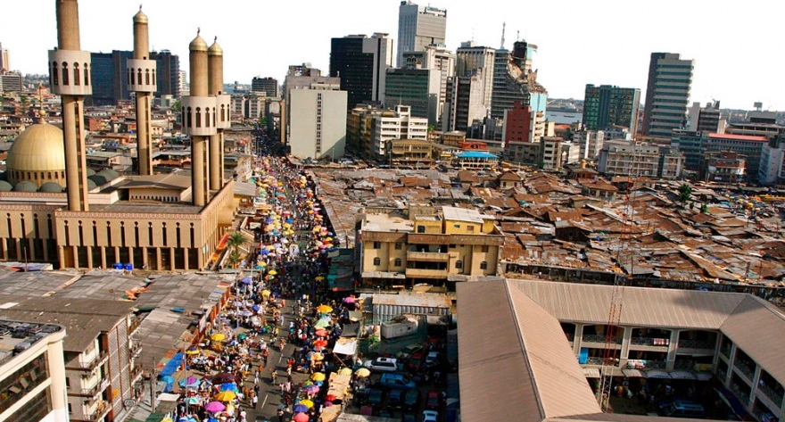
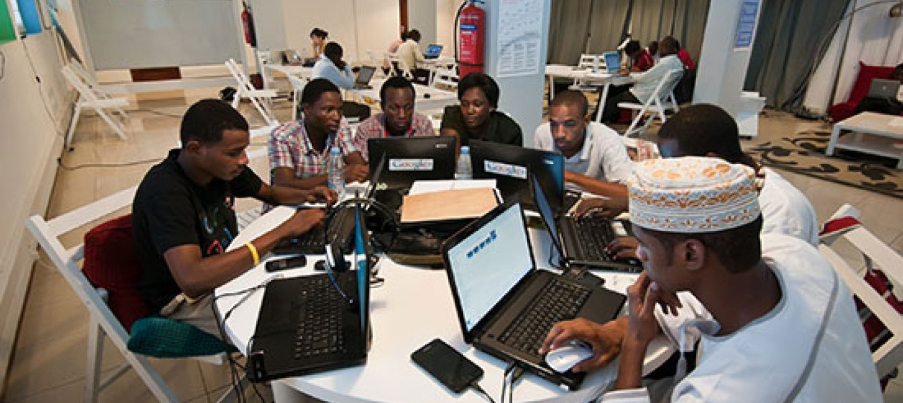

Discover how Nigeria's innovations and talent are shaping the future.
Nigeria is Africa's largest economy, driven by diverse industries including oil and gas, agriculture, and emerging technology sectors. Explore the strides made in infrastructure development and sustainable growth.
From fintech startups to groundbreaking innovations in health and education, Nigeria's tech ecosystem is thriving. Lagos, often referred to as the Silicon Valley of Africa, leads the charge in tech development.
Nigerians excel across the globe in arts, science, sports, and entertainment. The nation's youth are driving creativity and innovation, putting Nigeria on the world stage.